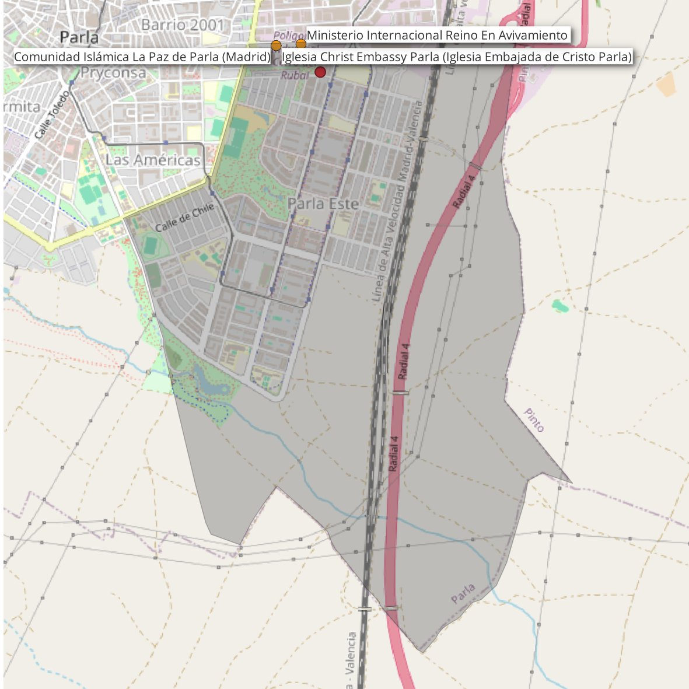
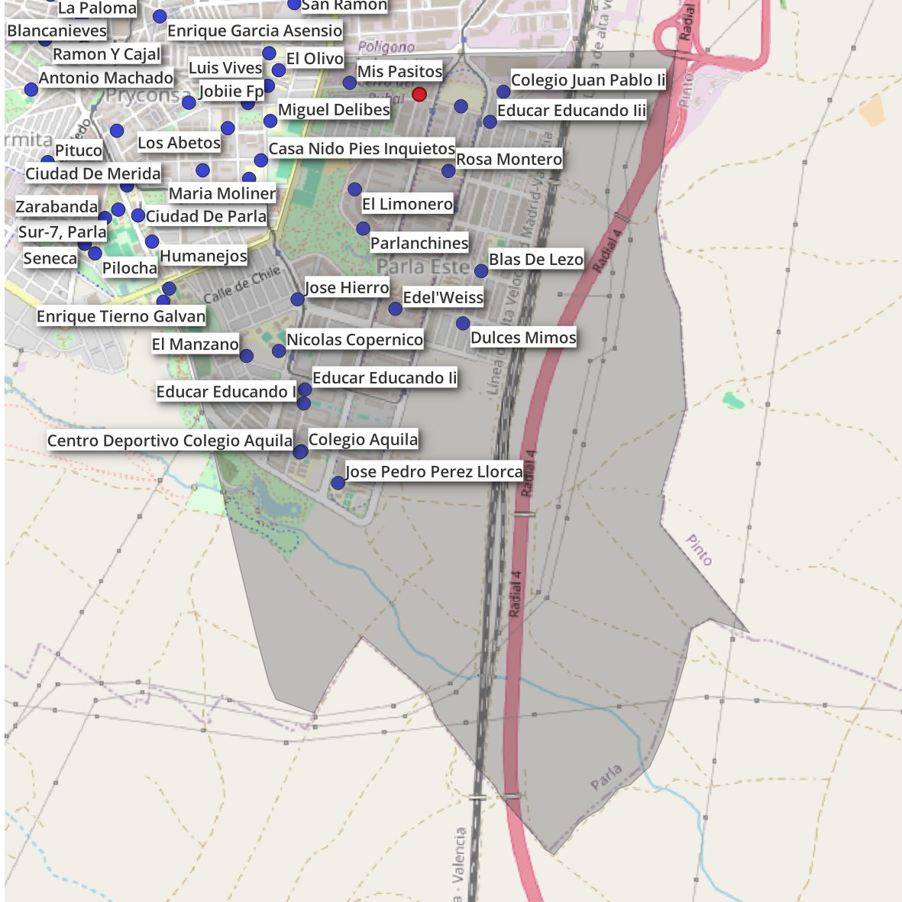

Puntos de interés en el territorio parroquial
Parroquia San Francisco de Sales (Parla) · Arciprestazgo de Parla
Entidades religiosas no católicas

3 entidades religiosas no católicas en el territorio de la parroquia.
Evangélicos (2)
- Iglesia Christ Embassy Parla (Iglesia Embajada de Cristo Parla)Calle Roma 24, Parla
- Ministerio Internacional Reino En AvivamientoAvenida Cerro del Rubal 20 Nave 1, Parla
Musulmanes (1)
- Comunidad Islámica La Paz de Parla (Madrid)Calle Roma 19, Parla
Fuente: Registro de Entidades Religiosas del Ministerio de la Presidencia, Justicia y Relaciones con las Cortes. Situación en el mapa: dirección geocodificada con CartoCiudad (IGN) o Nominatim (OpenStreetMap).
Centros educativos

15 centros educativos en el territorio de la parroquia (público: 9, privado: 4, privado concertado: 2).
| Centro | Tipo | Titularidad | Domicilio | Web |
|---|---|---|---|---|
| BLAS DE LEZO | Colegio de educación infantil y primaria | Público | Calle Estrella Denébola, s/n, 28983 Parla | Página web |
| CENTRO DEPORTIVO COLEGIO AQUILA | Centro autorizado de enseñanzas deportivas grado medio y superior | Privado | Calle Planeta Júpiter, 2, 28983 Parla | |
| COLEGIO AQUILA | Centro privado de educación infantil, primaria y secundaria | Privado concertado | Calle Planeta Júpiter, 2, 28983 Parla | Página web |
| COLEGIO JUAN PABLO II | Centro privado de educación infantil, primaria y secundaria | Privado concertado | Avenida de las Estrellas (PAU 4 bis Residencial Este), 45-47, 28983 Parla | Página web |
| DULCES MIMOS | Escuela infantil privada | Privado | Calle de la Osa Menor, 71-73, 28983 Parla | Página web |
| EDEL'WEISS | Escuela infantil privada | Privado | Calle Planeta Saturno, 9, 28983 Parla | |
| EL LIMONERO | Escuela infantil | Público | Calle Estrella Polar, s/n, 28983 Parla | Página web |
| EL MANZANO | Escuela infantil | Público | Calle Planeta Tierra, s/n, 28983 Parla | Página web |
| JOSE HIERRO | Colegio de educación infantil y primaria | Público | Calle Acuario, 34, 28983 Parla | Página web |
| JOSE PEDRO PEREZ LLORCA | Instituto de educación secundaria | Público | Calle Planeta Mercurio, s/n, 28983 Parla | Página web |
| MADRE TERESA DE CALCUTA | Colegio de educación infantil y primaria | Público | Calle Jaime I El Conquistador, 143, 28983 Parla | Página web |
| MARIA MONTESSORI | Colegio de educación especial | Público | Avenida de América, 49, 28983 Parla | Página web |
| MIS PASITOS | Escuela infantil privada | Privado | Calle Turín, 3-14, 28983 Parla | Página web |
| NICOLAS COPERNICO | Instituto de educación secundaria | Público | Avenida del Sistema Solar, 8, 28983 Parla | Página web |
| ROSA MONTERO | Colegio de educación infantil y primaria | Público | Paseo de la República Dominicana, 11, 28983 Parla | Página web |
Fuente: registro de centros educativos de la Comunidad de Madrid. Solo se recogen los centros de alta.